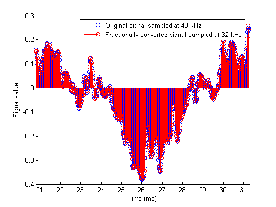
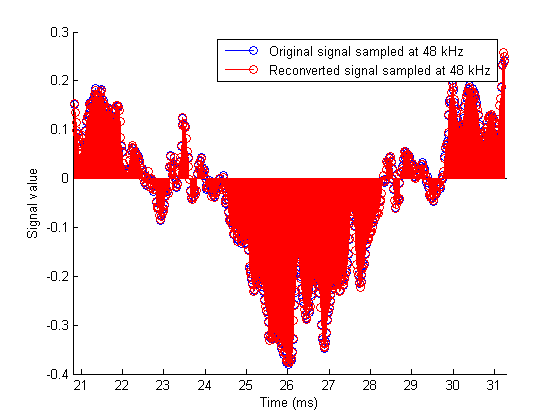
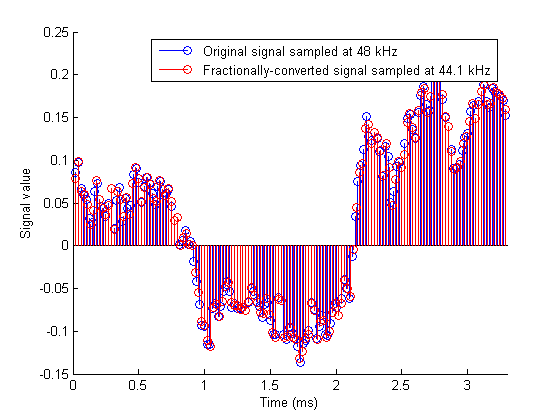

This demonstration illustrates various multirate filters that can be used for sample rate conversion of different audio formats.
All sample-rate conversion filters are created in the same way. One must specify first the interpolation factor L, then the decimation factor M and finally the FIR filter coefficients. Note that L and M must be relatively prime. Otherwise, they are converted to relatively prime factors and a warning is issued. If no filter coefficients are given, a lowpass filter is designed for you with a cutoff frequency of pi/max(L,M) and a gain of L in the passband.
h1 = mfilt.firsrc(4,3); % Default filter
h2 = mfilt.firfracinterp(8,6);
Warning: L and M are not relatively prime. Converting ratio 8/6 to 4/3. The cutoff frequency of the filter should be approximately pi/4.
Suppose an audio signal recorded at 48kHz must be converted to 32kHz for broadcasting. Consider the following audio sample recorded at 48kHz (Copyright 2002 FingerBomb)
load audio48;
To listen to the original 48 kHz signal we can use audioplayers
p48 = audioplayer(signal48kHz,Fs48);
play(p48); % stop(p48) to stop
The interpolation factor for this case is 2 and the decimation factor is 3. We can use a fractional decimator to achieve this. To keep things simple, we stick to the default filter that is designed for us. We could also use our own lowpass filter by specifying the coefficients as a third input argument: hfd = mfilt.firfracdecim(L,M,COEFFS).
hfd = mfilt.firfracdecim(2,3); % Use default filter
To actually use the fractional decimator to convert the sample-rate of the signal, we invoke the FILTER method.
s32 = filter(hfd,signal48kHz);
Once again, we can use an audioplayer to listen to the downconverted signal.
p32 = audioplayer(s32,32e3); play(p32);
We have about 9 seconds of audio. The exact length (in seconds) can be determined from
length(signal48kHz)/Fs48 % or length(s32)/32e3
ans =
8.9634
To plot the two signals overlaid, we'd like to show only a small segment because of the number of samples involved. We also have to take into account the delay in the 32 kHz signal introduced by the filter. The filter has a group-delay of 36 samples, but since it is running 3 times faster than the 32 kHz signal, it is equivalent to 12 low speed samples.
Note that there are 3 samples of the 48 kHz signal for every 2 samples of the 32 kHz signal.
xindx = 999:1500; % 0.0105 seconds at 48 kHz figure stem(xindx/Fs48*1e3,signal48kHz(xindx)); hold on; xindx2 = xindx(1)*32e3/48e3:xindx(end)*32e3/48e3; % Find the same start and stop times stem(xindx2/32,s32(xindx2+12),'r'); % Add 12 samples to account for filter delay xlabel('Time (ms)'); xlim([20.8 31.3]); ylabel('Signal value'); legend('Original signal sampled at 48 kHz',... 'Fractionally-converted signal sampled at 32 kHz'); set(gcf, 'Color', [1 1 1])
We can convert the broadcast quality signal back to 48 kHz with a fractional interpolator, for instance to store it on a DAT (Digital Audio Tape).
hfi = mfilt.firfracinterp(3,2); s48 = filter(hfi,s32);
We can optionally listen to the upconverted audio.
ps48 = audioplayer(s48,Fs48); play(ps48);
To compare both 48 kHz signals, we account for the delay in both the fractional decimation and the fractional interpolation. Different results can be achieved with different filters, we have only used the default filters here. Notice that most "reconverted signal" samples have moved slightly from where they originally where. This is a distorsion introduced by downconverting to 32 kHz and upconverting back to 48 kHz.
figure; xindx = 1000:1500; stem(xindx/Fs48*1e3,signal48kHz(xindx)); hold on; stem(xindx/Fs48*1e3,s48(1037:1537),'r'); % Account for the delay xlabel('Time (ms)'); xlim([20.8 31.3]); ylabel('Signal value'); legend('Original signal sampled at 48 kHz',... 'Reconverted signal sampled at 48 kHz'); set(gcf, 'Color', [1 1 1])
To convert from studio quality audio (48 kHz) to CD quality audio (44.1 kHz) we use a multirate filter better suited for this ratio change (interpolation factor of 147, decimation factor of 160). To avoid any startup delay introduced by the filter, we preload half of its states with the beggining of the signal, to compensate for the delay in the filter
hsrc = mfilt.firsrc(147,160); % Once again use default filter hsrc.ResetBeforeFiltering = 'off'; hsrc.States(13:-1:1) = signal48kHz(1:13); s441 = filter(hsrc,signal48kHz(14:end)); % This may take a few seconds
As usual, we can optionally play the downconverted signal.
p441 = audioplayer(s441,44.1e3); play(p441);
Once again we can compare segments of the two signals. In this case we can verify graphically that there is no delay introduced by the filter since we compensated for its group delay by preloading the states.
figure xindx = 1:160; stem(xindx/Fs48*1e3,signal48kHz(xindx)); hold on xindx2 = 1:147; stem(xindx2/44.1,s441(xindx2),'r'); xlabel('Time (ms)'); xlim([0 3.3]) ylabel('Signal value'); legend('Original signal sampled at 48 kHz',... 'Fractionally-converted signal sampled at 44.1 kHz'); set(gcf, 'Color', [1 1 1])